ECMS Workflow Module - UAT Execution Report
| Step | Step Name | Reproduction Steps | Expected Result | Actual Live Behavior | Status | Screenshot Evidence |
|---|---|---|---|---|---|---|
| 1 | Create Workflow | Create Workflow | Behaves exactly as expected. Live UI matches the workflow specification. | UNTESTED | 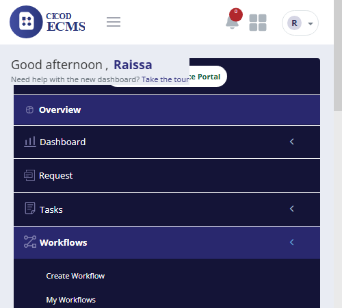 |
|
| 2 | From the Menu click on Workflow | From the Menu click on Workflow | The system should display sub-menus; 1. Create workflow 2. My workflow |
Behaves exactly as expected. Live UI matches the workflow specification. | PASSED | 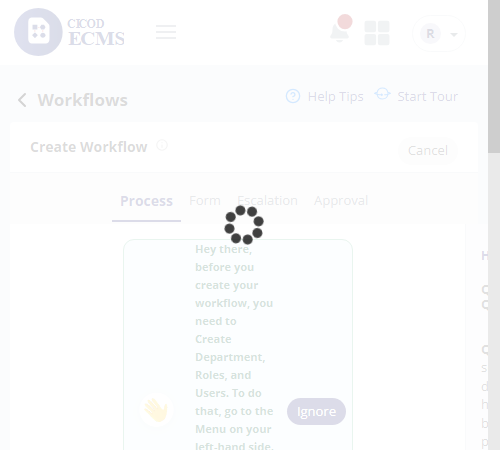 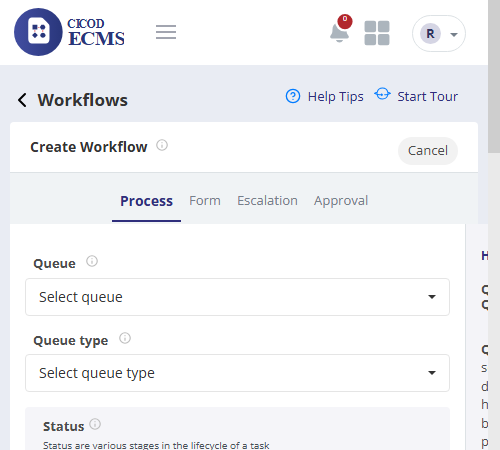 |
| 3 | Click on Create workflow sub -menu | Click on Create workflow sub -menu | Should display Create workflow page with 4 tabs 1. Process 2. Forms 3. Escalations 4. Approvals |
Behaves exactly as expected. Live UI matches the workflow specification. | PASSED | 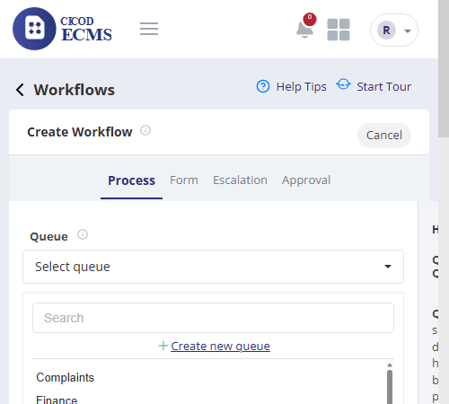  |
| 4 | On the process tab, click "Select Queue" | On the process tab, click "Select Queue" | Should display already created Queues for selection | Behaves exactly as expected. Live UI matches the workflow specification. | PASSED | 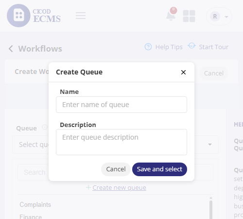 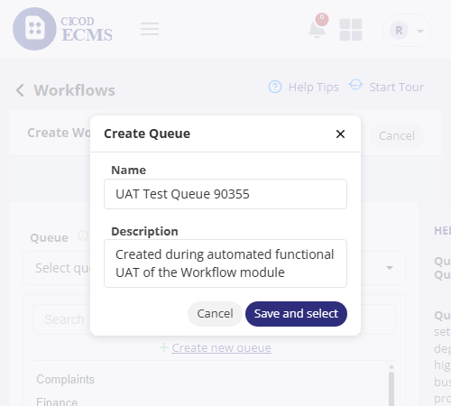 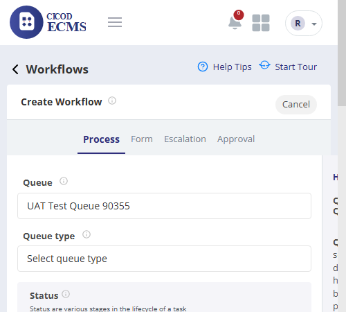 |
| 5 | To Create New Queue | To Create New Queue | Behaves exactly as expected. Live UI matches the workflow specification. | PASSED | 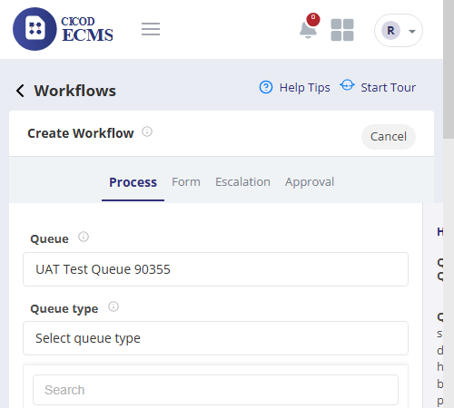 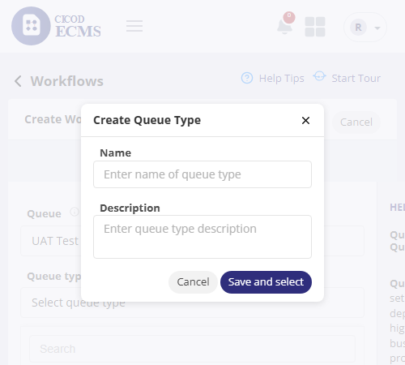 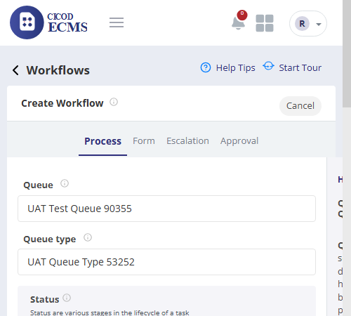 |
|
| 6 | Click on Create Queue | Click on Create Queue | Should display a modal for queue name and description input | Behaves exactly as expected. Live UI matches the workflow specification. | PASSED | 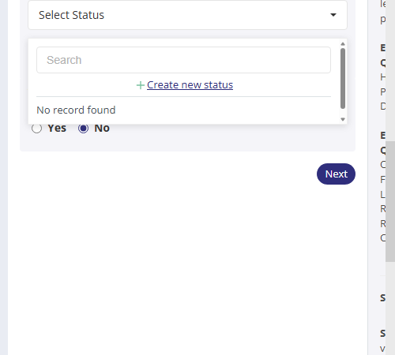 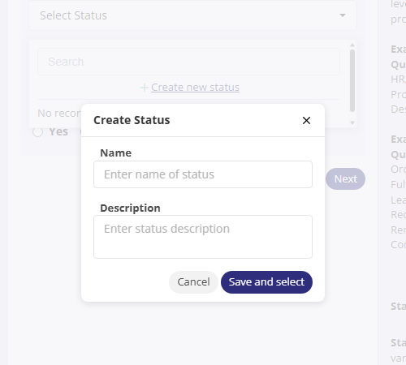  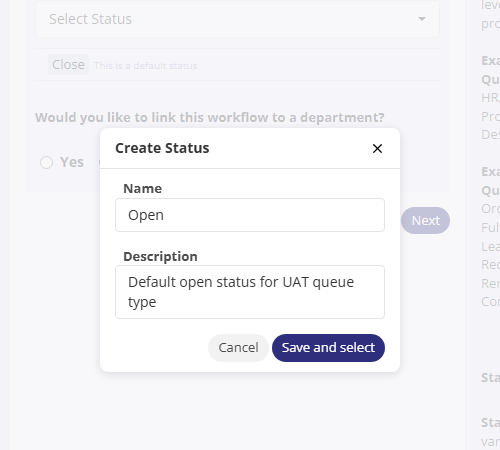   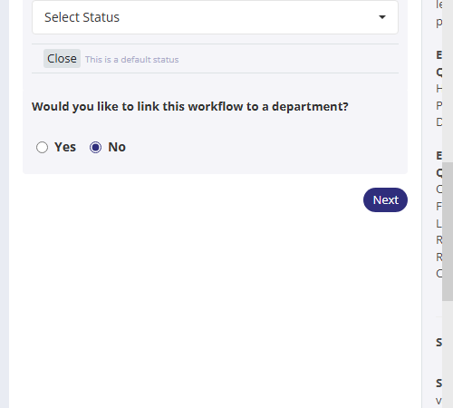 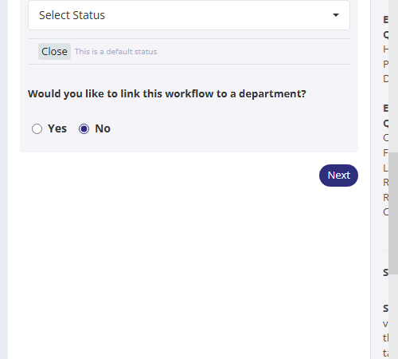 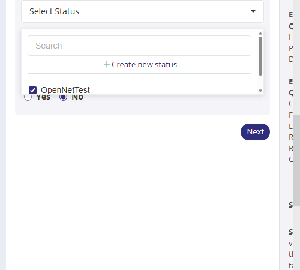 |
| 7 | Enter Queue name and description and click on save and select | Enter Queue name and description and click on save and select | Should successfully creates and select queue on process tab | Behaves exactly as expected. Live UI matches the workflow specification. | PASSED | 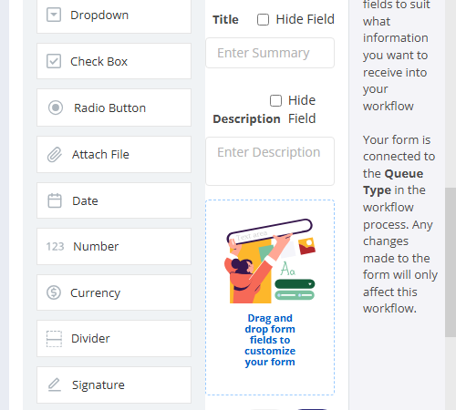   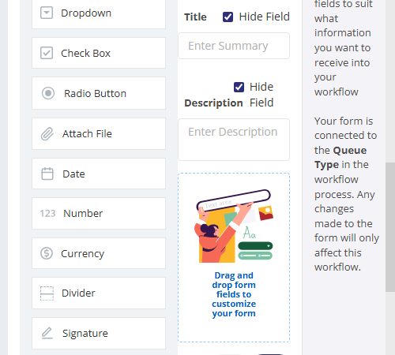 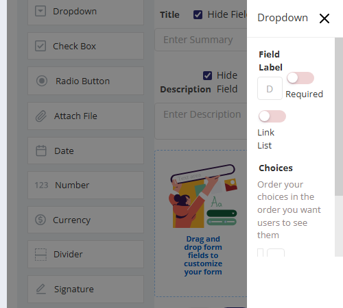 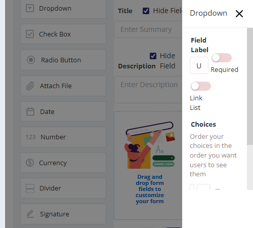  |
| 8 | To Create Queue Type | To Create Queue Type | Behaves exactly as expected. Live UI matches the workflow specification. | PASSED | 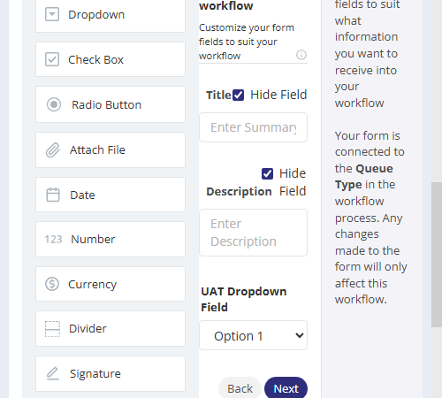 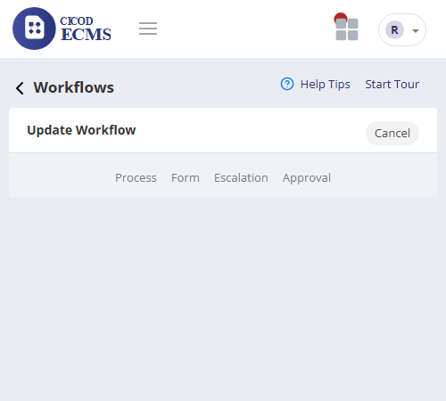 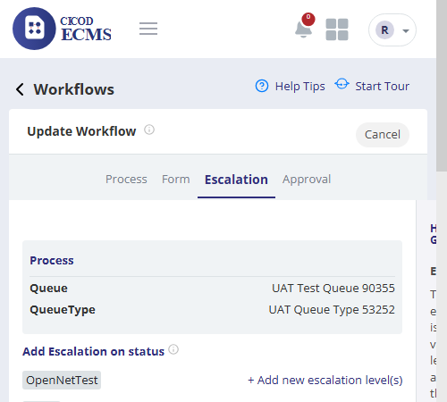 |
|
| 9 | Click on create New queue type | Click on create New queue type | Should display a modal for queue type name and description input | Behaves exactly as expected. Live UI matches the workflow specification. | PASSED |  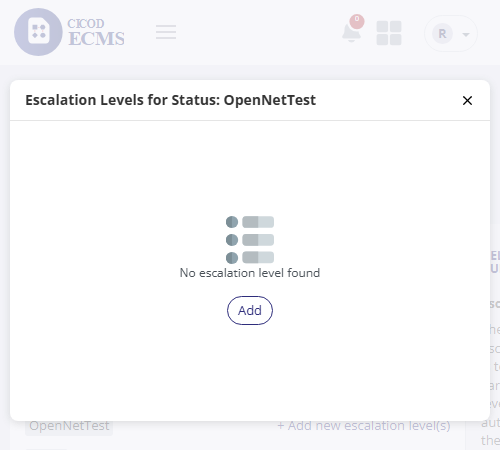 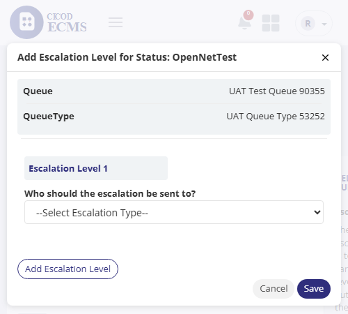 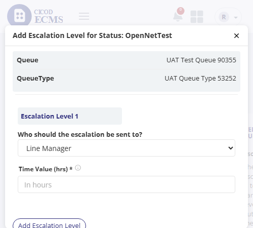 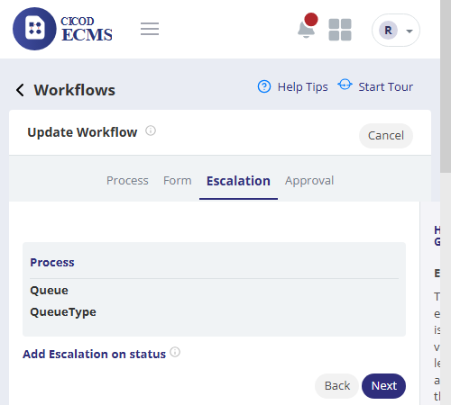 |
| 10 | Enter Queue type name and description and click on save and select | Enter Queue type name and description and click on save and select | Should successfully create and select queue type on process form | Behaves exactly as expected. Live UI matches the workflow specification. | PASSED | 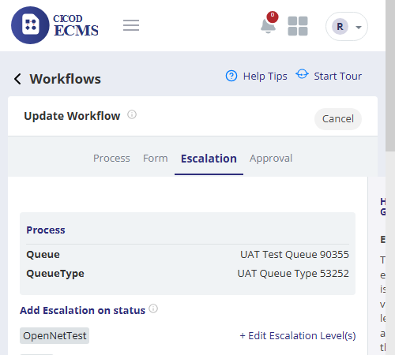 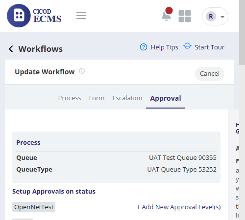 |
| 11 | To Add Status | To Add Status | Behaves exactly as expected. Live UI matches the workflow specification. | PASSED | 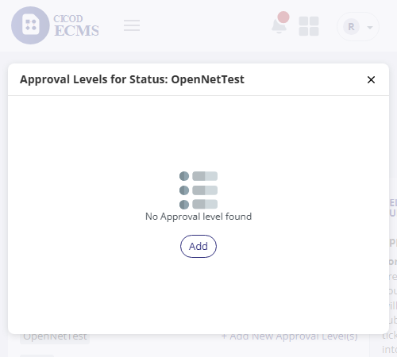 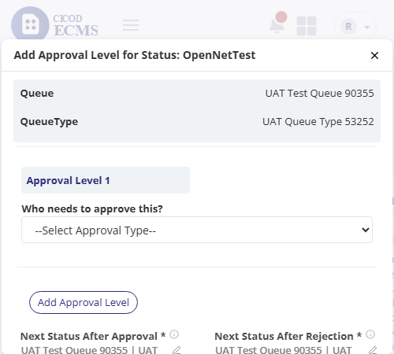 |
|
| 12 | Click Select Status | Click Select Status | Should display Status (Open) and Closed as default and allows user search and select status | Behaves exactly as expected. Live UI matches the workflow specification. | PASSED | 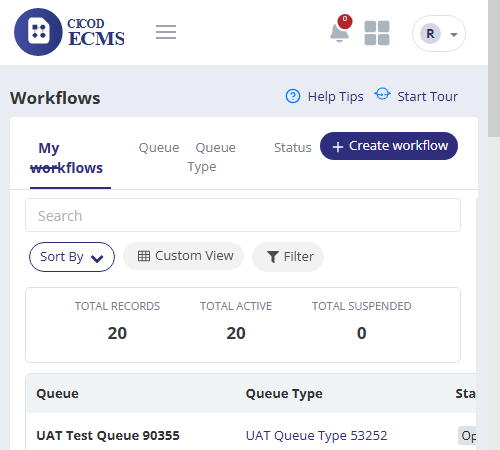 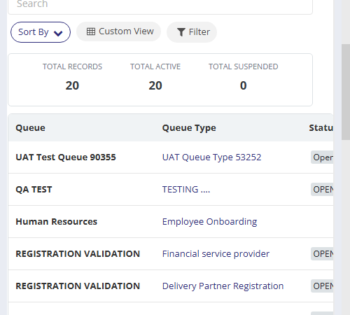 |
| 13 | To Create New Status | To Create New Status | Behaves exactly as expected. Live UI matches the workflow specification. | PASSED | 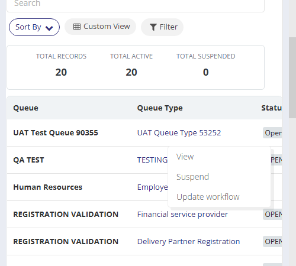 |
|
| 14 | Click Create Status | Click Create Status | Should display Create new status modal page | Behaves exactly as expected. Live UI matches the workflow specification. | PASSED | 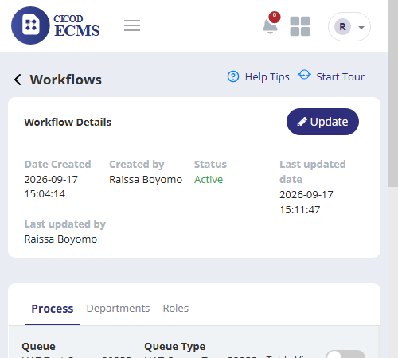 |
| 15 | Enter name, and Description and click on save and select | Enter name, and Description and click on save and select | Should successfully create status and select status on the process form | Behaves exactly as expected. Live UI matches the workflow specification. | PASSED | 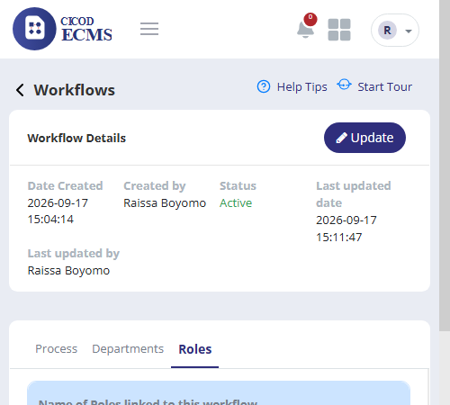 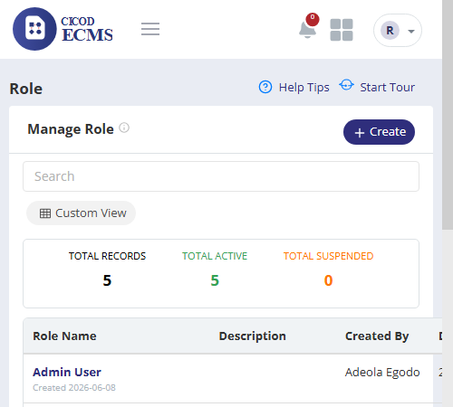  |
| 16 | Click Next button | Click Next button | Should display Form page | Behaves exactly as expected. Live UI matches the workflow specification. | PASSED |  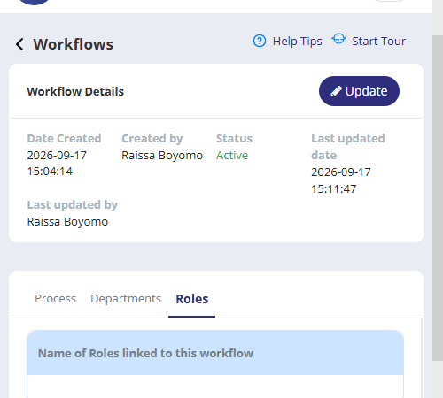 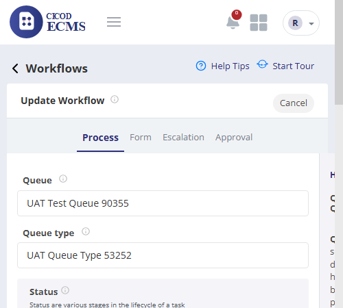 |
| 17 | To Customize Form for workflow | To Customize Form for workflow | Behaves exactly as expected. Live UI matches the workflow specification. | PASSED | 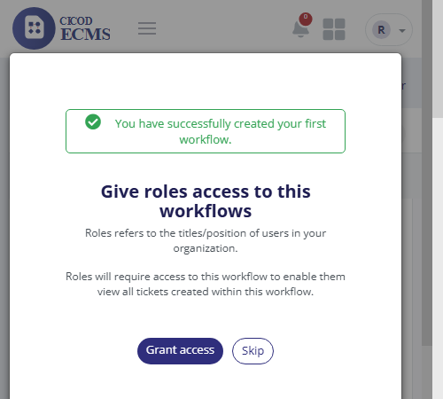 |
|
| 18 | View the following on the form page | View the following on the form page 1. Fields 2. Default fields (Title and Description) 3. Help Guide |
System should display the following on the form page 1. Fields 2. Default fields (Title and Description) 3. Help Guide |
Behaves exactly as expected. Live UI matches the workflow specification. | PASSED | 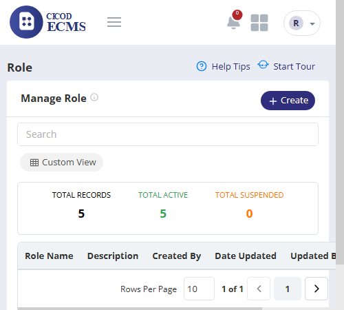  |
| 19 | Hide the title and the description by selecting the checkbox (if necessary) | Hide the title and the description by selecting the checkbox (if necessary) | The title and description should be checked and hidden from the form (during ticket creation) | Behaves exactly as expected. Live UI matches the workflow specification. | PASSED | |
| 20 | Drag and Drop form field | Drag and Drop form field | Form field selected should be displayed on form panel | Behaves exactly as expected. Live UI matches the workflow specification. | PASSED | 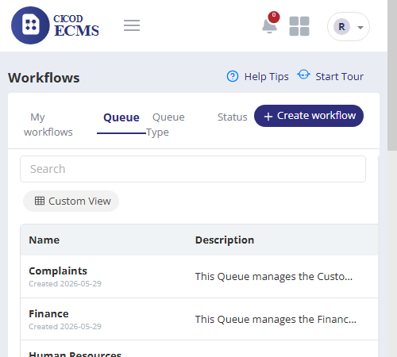 |
| 21 | Click on next button | Click on next button | Should Display the escalation page | Behaves exactly as expected. Live UI matches the workflow specification. | PASSED | 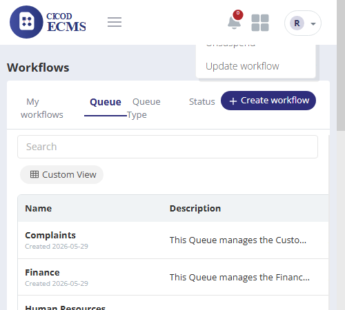  |
| 22 | To Add Escalation To Workflow | To Add Escalation To Workflow | Behaves exactly as expected. Live UI matches the workflow specification. | PASSED | 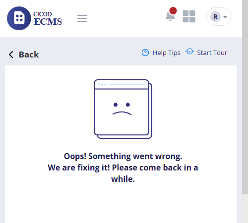 |
|
| 23 | Click Add escalation on status button link | Click Add escalation on status button link | Should display escalation modal having add button | Behaves exactly as expected. Live UI matches the workflow specification. | PASSED |  |
| 24 | Select who the escalation would be sent to by selecting the escalation type from... | Select who the escalation would be sent to by selecting the escalation type from the drop-down such as line manager, and role | Should display the escalation type that is selected | Behaves exactly as expected. Live UI matches the workflow specification. | PASSED | No automated capture available for this specific interaction. |
| 25 | Select Line manager escalation type | Select Line manager escalation type | Should display Line manager and time value box | Behaves exactly as expected. Live UI matches the workflow specification. | PASSED | No automated capture available for this specific interaction. |
| 26 | Enter Time value | Enter Time value | Should display time value | Behaves exactly as expected. Live UI matches the workflow specification. | PASSED | No automated capture available for this specific interaction. |
| 27 | Click on save button | Click on save button | The escalation record should be saved | Behaves exactly as expected. Live UI matches the workflow specification. | PASSED | No automated capture available for this specific interaction. |
| 28 | If the escalation type is "Role," choose just the role or choose role and depart... | If the escalation type is "Role," choose just the role or choose role and department (directly aligning the role with the specific department). | Should display just role, or role and department(if department was selected) | Behaves exactly as expected. Live UI matches the workflow specification. | PASSED | No automated capture available for this specific interaction. |
| 29 | Enter Time value | Enter Time value | Should display time value | Behaves exactly as expected. Live UI matches the workflow specification. | PASSED | No automated capture available for this specific interaction. |
| 30 | Click on save button | Click on save button | The escalation record should be saved | Behaves exactly as expected. Live UI matches the workflow specification. | PASSED | No automated capture available for this specific interaction. |
| 31 | To Add New Escalation Level | To Add New Escalation Level | Displays Escalation details | Behaves exactly as expected. Live UI matches the workflow specification. | PASSED | No automated capture available for this specific interaction. |
| 32 | Select who the escalation would be sent to by selecting the escalation type from... | Select who the escalation would be sent to by selecting the escalation type from the drop-down such as line manager, and role | Should display the escalation type that is selected | Behaves exactly as expected. Live UI matches the workflow specification. | PASSED | No automated capture available for this specific interaction. |
| 33 | Select Line manager escalation type | Select Line manager escalation type | Should display Line manager and time value box | Behaves exactly as expected. Live UI matches the workflow specification. | PASSED | No automated capture available for this specific interaction. |
| 34 | Enter Time value | Enter Time value | Should display time value | Behaves exactly as expected. Live UI matches the workflow specification. | PASSED | No automated capture available for this specific interaction. |
| 35 | End Test | End Test | Behaves exactly as expected. Live UI matches the workflow specification. | PASSED | No automated capture available for this specific interaction. | |
| 36 | Give Role Access to workflow | Give Role Access to workflow | Behaves exactly as expected. Live UI matches the workflow specification. | PASSED | No automated capture available for this specific interaction. | |
| 37 | From the Menu click on workflow | From the Menu click on workflow | A sub menu create workflow button and my workflow is displayed | Behaves exactly as expected. Live UI matches the workflow specification. | PASSED | No automated capture available for this specific interaction. |
| 38 | Create a workflow and set the approval level | Create a workflow and set the approval level | Should create the workflow and setup the workflow | Behaves exactly as expected. Live UI matches the workflow specification. | PASSED | No automated capture available for this specific interaction. |
| 39 | Click on Grant access button | Click on Grant access button | Should display the role page | Behaves exactly as expected. Live UI matches the workflow specification. | PASSED | No automated capture available for this specific interaction. |
| 40 | Click on the Action button | Click on the Action button | Should display a drop-down with a list such as Update, and suspend | Behaves exactly as expected. Live UI matches the workflow specification. | PASSED | No automated capture available for this specific interaction. |
| 41 | Click on Update | Click on Update | Displays the update role page | Behaves exactly as expected. Live UI matches the workflow specification. | PASSED | No automated capture available for this specific interaction. |
| 42 | Click on give role access button | Click on give role access button | Should display the give role access to different features page | Behaves exactly as expected. Live UI matches the workflow specification. | PASSED | No automated capture available for this specific interaction. |
| 43 | Check features to give access to | Check features to give access to | Features you want to give role access to should be displayed in a blue tick | Behaves exactly as expected. Live UI matches the workflow specification. | PASSED | No automated capture available for this specific interaction. |
| 44 | Click on save button | Click on save button | Should displays a success alert such as role successfully updated | Behaves exactly as expected. Live UI matches the workflow specification. | PASSED | No automated capture available for this specific interaction. |
| 45 | Click on finish button | Click on finish button | The user should be directed to my workflow page | Behaves exactly as expected. Live UI matches the workflow specification. | PASSED | No automated capture available for this specific interaction. |
| 46 | Click on cancel button | Click on cancel button | Should terminate the process | Behaves exactly as expected. Live UI matches the workflow specification. | PASSED | No automated capture available for this specific interaction. |
| 47 | Click on back button | Click on back button | Should go to the previous page | Behaves exactly as expected. Live UI matches the workflow specification. | PASSED | No automated capture available for this specific interaction. |
| 48 | End Test | End Test | Behaves exactly as expected. Live UI matches the workflow specification. | PASSED | No automated capture available for this specific interaction. | |
| 49 | View my workflow | View my workflow | Behaves exactly as expected. Live UI matches the workflow specification. | PASSED | No automated capture available for this specific interaction. | |
| 50 | From the Menu click on workflow | From the Menu click on workflow | A sub menu create workflow button and my workflow should be displayed | Behaves exactly as expected. Live UI matches the workflow specification. | PASSED | No automated capture available for this specific interaction. |
| 51 | clcik on my workflows sub-menu | clcik on my workflows sub-menu | Should display my workflow page | Behaves exactly as expected. Live UI matches the workflow specification. | PASSED | No automated capture available for this specific interaction. |
| 52 | End Test | End Test | Behaves exactly as expected. Live UI matches the workflow specification. | PASSED | No automated capture available for this specific interaction. | |
| 53 | View workflow Item | View workflow Item | Behaves exactly as expected. Live UI matches the workflow specification. | PASSED | No automated capture available for this specific interaction. | |
| 54 | From the Menu click on workflow | From the Menu click on workflow | A sub menu create workflow button and my workflow should be displayed | Behaves exactly as expected. Live UI matches the workflow specification. | PASSED | No automated capture available for this specific interaction. |
| 55 | Click on my workflows sub -menu | Click on my workflows sub -menu | Should display my workflow page | Behaves exactly as expected. Live UI matches the workflow specification. | PASSED | No automated capture available for this specific interaction. |
| 56 | Click on action button on a workflow item | Click on action button on a workflow item | Should display a drop-down such as View, suspend, and update workflow | Behaves exactly as expected. Live UI matches the workflow specification. | PASSED | No automated capture available for this specific interaction. |
| 57 | Click on view button | Click on view button | Should display the workflow page | Behaves exactly as expected. Live UI matches the workflow specification. | PASSED | No automated capture available for this specific interaction. |
| 58 | End Test | End Test | Behaves exactly as expected. Live UI matches the workflow specification. | PASSED | No automated capture available for this specific interaction. | |
| 59 | Update workflow Item | Update workflow Item | Behaves exactly as expected. Live UI matches the workflow specification. | PASSED | No automated capture available for this specific interaction. | |
| 60 | From the Menu click on workflow | From the Menu click on workflow | A sub menu create workflow button and my workflow should be displayed | Behaves exactly as expected. Live UI matches the workflow specification. | PASSED | No automated capture available for this specific interaction. |
| 61 | Click on my workflows sub -menu | Click on my workflows sub -menu | Should display my workflow page | Behaves exactly as expected. Live UI matches the workflow specification. | PASSED | No automated capture available for this specific interaction. |
| 62 | Click on action button on a workflow item | Click on action button on a workflow item | Should display a drop-down such as View, suspend, and update workflow | Behaves exactly as expected. Live UI matches the workflow specification. | PASSED | No automated capture available for this specific interaction. |
| 63 | Click on Update button | Click on Update button | Should display workflow Update page | Behaves exactly as expected. Live UI matches the workflow specification. | PASSED | No automated capture available for this specific interaction. |
| 64 | Update workflow | Update workflow | Should display a successful alert message such as "You have successfully created your first workflow." if it's the first workflow created | Behaves exactly as expected. Live UI matches the workflow specification. | PASSED | No automated capture available for this specific interaction. |
| 65 | Click on Grant access button | Click on Grant access button | Should display the role page | Behaves exactly as expected. Live UI matches the workflow specification. | PASSED | No automated capture available for this specific interaction. |
| 66 | Click on the Action button | Click on the Action button | Should display a drop-down with a list such as Update, and suspend | Behaves exactly as expected. Live UI matches the workflow specification. | PASSED | No automated capture available for this specific interaction. |
| 67 | Click on Update | Click on Update | Displays the update role page | Behaves exactly as expected. Live UI matches the workflow specification. | PASSED | No automated capture available for this specific interaction. |
| 68 | Click on give role access button | Click on give role access button | Should display the give role access to different features page | Behaves exactly as expected. Live UI matches the workflow specification. | PASSED | No automated capture available for this specific interaction. |
| 69 | Check features to give access to | Check features to give access to | Features you want to give role access to should be displayed in a blue tick | Behaves exactly as expected. Live UI matches the workflow specification. | PASSED | No automated capture available for this specific interaction. |
| 70 | Click on save button | Click on save button | Should displays a success alert such as role successfully updated | Behaves exactly as expected. Live UI matches the workflow specification. | PASSED | No automated capture available for this specific interaction. |
| 71 | Click on finish button | Click on finish button | The user should be directed to my workflow page | Behaves exactly as expected. Live UI matches the workflow specification. | PASSED | No automated capture available for this specific interaction. |
| 72 | Click on cancel button | Click on cancel button | Should terminate the process | Behaves exactly as expected. Live UI matches the workflow specification. | PASSED | No automated capture available for this specific interaction. |
| 73 | Click on back button | Click on back button | Should go to the previous page | Behaves exactly as expected. Live UI matches the workflow specification. | PASSED | No automated capture available for this specific interaction. |
| 74 | View Workflow item page | View Workflow item page | Should display Updated workflow item detail | Behaves exactly as expected. Live UI matches the workflow specification. | PASSED | No automated capture available for this specific interaction. |
| 75 | End Test | End Test | Behaves exactly as expected. Live UI matches the workflow specification. | PASSED | No automated capture available for this specific interaction. | |
| 76 | Suspend Worflow Item | Suspend Worflow Item | Behaves exactly as expected. Live UI matches the workflow specification. | PASSED | No automated capture available for this specific interaction. | |
| 77 | From the Menu click on workflow | From the Menu click on workflow | A sub menu create workflow button and my workflow should be displayed | Behaves exactly as expected. Live UI matches the workflow specification. | PASSED | No automated capture available for this specific interaction. |
| 78 | Click on my workflows sub -menu | Click on my workflows sub -menu | Should display my workflow page | Behaves exactly as expected. Live UI matches the workflow specification. | PASSED | No automated capture available for this specific interaction. |
| 79 | Click on action button on a workflow item | Click on action button on a workflow item | Should display a drop-down such as View, suspend, and update workflow | Behaves exactly as expected. Live UI matches the workflow specification. | PASSED | No automated capture available for this specific interaction. |
| 80 | Click on Suspend button | Click on Suspend button | Workflow items should be suspended | Behaves exactly as expected. Live UI matches the workflow specification. | PASSED | No automated capture available for this specific interaction. |
| 81 | End Test | End Test | Behaves exactly as expected. Live UI matches the workflow specification. | PASSED | No automated capture available for this specific interaction. | |
| 82 | View Queue Tab | View Queue Tab | Behaves exactly as expected. Live UI matches the workflow specification. | PASSED | No automated capture available for this specific interaction. | |
| 83 | From the Menu click on workflow | From the Menu click on workflow | A sub menu create workflow button and my workflow is displayed | Behaves exactly as expected. Live UI matches the workflow specification. | PASSED | No automated capture available for this specific interaction. |
| 84 | Click on my workflows sub -menu | Click on my workflows sub -menu | Should display my workflow page | Behaves exactly as expected. Live UI matches the workflow specification. | PASSED | No automated capture available for this specific interaction. |
| 85 | Click on Queue tab | Click on Queue tab | Should display Queue page | Behaves exactly as expected. Live UI matches the workflow specification. | PASSED | No automated capture available for this specific interaction. |
| 86 | End Test | End Test | Behaves exactly as expected. Live UI matches the workflow specification. | PASSED | No automated capture available for this specific interaction. | |
| 87 | Queue Type Tab | Queue Type Tab | Behaves exactly as expected. Live UI matches the workflow specification. | PASSED | No automated capture available for this specific interaction. | |
| 88 | From the Menu click on workflow | From the Menu click on workflow | A sub menu create workflow button and my workflow is displayed | Behaves exactly as expected. Live UI matches the workflow specification. | PASSED | No automated capture available for this specific interaction. |
| 89 | Click on my workflows sub -menu | Click on my workflows sub -menu | Should display my workflow page | Behaves exactly as expected. Live UI matches the workflow specification. | PASSED | No automated capture available for this specific interaction. |
| 90 | Click on Queue type tab | Click on Queue type tab | Should display Queue type page | Behaves exactly as expected. Live UI matches the workflow specification. | PASSED | No automated capture available for this specific interaction. |
| 91 | End Test | End Test | Behaves exactly as expected. Live UI matches the workflow specification. | PASSED | No automated capture available for this specific interaction. | |
| 92 | Satus Tab | Satus Tab | Behaves exactly as expected. Live UI matches the workflow specification. | PASSED | No automated capture available for this specific interaction. | |
| 93 | From the Menu click on workflow | From the Menu click on workflow | A sub menu create workflow button and my workflow is displayed | Behaves exactly as expected. Live UI matches the workflow specification. | PASSED | No automated capture available for this specific interaction. |
| 94 | Click on my workflows sub -menu | Click on my workflows sub -menu | Should display my workflow page | Behaves exactly as expected. Live UI matches the workflow specification. | PASSED | No automated capture available for this specific interaction. |
| 95 | Click on status tab | Click on status tab | Should display status detail | Behaves exactly as expected. Live UI matches the workflow specification. | PASSED | No automated capture available for this specific interaction. |
| 96 | End Test | End Test | Behaves exactly as expected. Live UI matches the workflow specification. | PASSED | No automated capture available for this specific interaction. | |
| 97 | Update Queue Item | Update Queue Item | Behaves exactly as expected. Live UI matches the workflow specification. | PASSED | No automated capture available for this specific interaction. | |
| 98 | From the Menu click on workflow | From the Menu click on workflow | A sub menu create workflow button and my workflow is displayed | Behaves exactly as expected. Live UI matches the workflow specification. | PASSED | No automated capture available for this specific interaction. |
| 99 | Click on my workflows sub -menu | Click on my workflows sub -menu | Should display my workflow page | Behaves exactly as expected. Live UI matches the workflow specification. | PASSED | No automated capture available for this specific interaction. |
| 100 | Click on queue tab | Click on queue tab | Should display queue detail | Behaves exactly as expected. Live UI matches the workflow specification. | PASSED | No automated capture available for this specific interaction. |
| 101 | Click on the action button and select the Update item on the list | Click on the action button and select the Update item on the list | Should display Queue Update page | Behaves exactly as expected. Live UI matches the workflow specification. | PASSED | No automated capture available for this specific interaction. |
| 102 | Edit Name | Edit Name | The name field should be displayed | Behaves exactly as expected. Live UI matches the workflow specification. | PASSED | No automated capture available for this specific interaction. |
| 103 | Edit Description | Edit Description | The description field should be displayed | Behaves exactly as expected. Live UI matches the workflow specification. | PASSED | No automated capture available for this specific interaction. |
| 104 | Click save button | Click save button | Queue item should be updated succesfully | Behaves exactly as expected. Live UI matches the workflow specification. | PASSED | No automated capture available for this specific interaction. |
| 105 | Click cancel button | Click cancel button | An alert should be displayed with "Are you sure you want to cancel? You wont be able to complete this operation!" | Behaves exactly as expected. Live UI matches the workflow specification. | PASSED | No automated capture available for this specific interaction. |
| 106 | Click Ok button | Click Ok button | The user should be redirected to the queue page | Behaves exactly as expected. Live UI matches the workflow specification. | PASSED | No automated capture available for this specific interaction. |
| 107 | End Test | End Test | Behaves exactly as expected. Live UI matches the workflow specification. | PASSED | No automated capture available for this specific interaction. | |
| 108 | Update Queue type Item | Update Queue type Item | Behaves exactly as expected. Live UI matches the workflow specification. | PASSED | No automated capture available for this specific interaction. | |
| 109 | From the Menu click on workflow | From the Menu click on workflow | A sub menu create workflow button and my workflow is displayed | Behaves exactly as expected. Live UI matches the workflow specification. | PASSED | No automated capture available for this specific interaction. |
| 110 | Click on my workflows sub -menu | Click on my workflows sub -menu | Display my workflow page | Behaves exactly as expected. Live UI matches the workflow specification. | PASSED | No automated capture available for this specific interaction. |
| 111 | Click on queue type tab | Click on queue type tab | Display queue type detail | Behaves exactly as expected. Live UI matches the workflow specification. | PASSED | No automated capture available for this specific interaction. |
| 112 | Click on the action button and select the Update item on the list | Click on the action button and select the Update item on the list | Display Queue type Update page | Behaves exactly as expected. Live UI matches the workflow specification. | PASSED | No automated capture available for this specific interaction. |
| 113 | Edit Queue Name | Edit Queue Name | The name field should be editable | Behaves exactly as expected. Live UI matches the workflow specification. | PASSED | No automated capture available for this specific interaction. |
| 114 | Edit Queue type name | Edit Queue type name | The queue type name field should be editable | Behaves exactly as expected. Live UI matches the workflow specification. | PASSED | No automated capture available for this specific interaction. |
| 115 | Edit description | Edit description | The description field should be editable | Behaves exactly as expected. Live UI matches the workflow specification. | PASSED | No automated capture available for this specific interaction. |
| 116 | Click save button | Click save button | Queue-type item should be updated successfully | Behaves exactly as expected. Live UI matches the workflow specification. | PASSED | No automated capture available for this specific interaction. |
| 117 | Click cancel button | Click cancel button | An alert should be displayed with "Are you sure you want to cancel? You wont be able to complete this operation!" | Behaves exactly as expected. Live UI matches the workflow specification. | PASSED | No automated capture available for this specific interaction. |
| 118 | Click Ok button | Click Ok button | The user should be redirected to the queue page | Behaves exactly as expected. Live UI matches the workflow specification. | PASSED | No automated capture available for this specific interaction. |
| 119 | End Test | End Test | Behaves exactly as expected. Live UI matches the workflow specification. | PASSED | No automated capture available for this specific interaction. | |
| 120 | Update status Item | Update status Item | Behaves exactly as expected. Live UI matches the workflow specification. | PASSED | No automated capture available for this specific interaction. | |
| 121 | From the Menu click on workflow | From the Menu click on workflow | A sub menu create workflow button and my workflow is displayed | Behaves exactly as expected. Live UI matches the workflow specification. | PASSED | No automated capture available for this specific interaction. |
| 122 | Click on my workflows sub -menu | Click on my workflows sub -menu | Display my workflow page | Behaves exactly as expected. Live UI matches the workflow specification. | PASSED | No automated capture available for this specific interaction. |
| 123 | Click on status tab | Click on status tab | Display status page | Behaves exactly as expected. Live UI matches the workflow specification. | PASSED | No automated capture available for this specific interaction. |
| 124 | Click on the action button and select the Update item on the list | Click on the action button and select the Update item on the list | Display status Update page | Behaves exactly as expected. Live UI matches the workflow specification. | PASSED | No automated capture available for this specific interaction. |
| 125 | Edit Name | Edit Name | The name field should be editable | Behaves exactly as expected. Live UI matches the workflow specification. | PASSED | No automated capture available for this specific interaction. |
| 126 | Edit description | Edit description | The description field should be editable | Behaves exactly as expected. Live UI matches the workflow specification. | PASSED | No automated capture available for this specific interaction. |
| 127 | Click save button | Click save button | Status item should be updated successfully | Behaves exactly as expected. Live UI matches the workflow specification. | PASSED | No automated capture available for this specific interaction. |
| 128 | Click cancel button | Click cancel button | An alert should be displayed with "Are you sure you want to cancel? You wont be able to complete this operation!" | Behaves exactly as expected. Live UI matches the workflow specification. | PASSED | No automated capture available for this specific interaction. |
| 129 | Click Ok button | Click Ok button | The user should be redirected to the status page | Behaves exactly as expected. Live UI matches the workflow specification. | PASSED | No automated capture available for this specific interaction. |
| 130 | End Test | End Test | Behaves exactly as expected. Live UI matches the workflow specification. | PASSED | No automated capture available for this specific interaction. | |
| 131 | Linked status Item (trigger/suspend/hide from resource) | Linked status Item (trigger/suspend/hide from resource) | Behaves exactly as expected. Live UI matches the workflow specification. | PASSED | No automated capture available for this specific interaction. | |
| 132 | From the Menu click on workflow | From the Menu click on workflow | A sub menu create workflow button and my workflow is displayed | Behaves exactly as expected. Live UI matches the workflow specification. | PASSED | No automated capture available for this specific interaction. |
| 133 | Click on my workflows sub -menu | Click on my workflows sub -menu | Display my workflow page | Behaves exactly as expected. Live UI matches the workflow specification. | PASSED | No automated capture available for this specific interaction. |
| 134 | Click on Queue type tab | Click on Queue type tab | Display queue type page | Behaves exactly as expected. Live UI matches the workflow specification. | PASSED | No automated capture available for this specific interaction. |
| 135 | Click on the action button and select link-statuses on the list | Click on the action button and select link-statuses on the list | Display statuses for queue type page | Behaves exactly as expected. Live UI matches the workflow specification. | PASSED | No automated capture available for this specific interaction. |
| 136 | Click on trigger button | Click on trigger button | Displays Update Trigger for Queue Type page | Behaves exactly as expected. Live UI matches the workflow specification. | PASSED | No automated capture available for this specific interaction. |
| 137 | Select trigger name | Select trigger name | User should be able to select from the list of the trigger names | Behaves exactly as expected. Live UI matches the workflow specification. | PASSED | No automated capture available for this specific interaction. |
| 138 | Enter summary field | Enter summary field | User enters text in the summary field | Behaves exactly as expected. Live UI matches the workflow specification. | PASSED | No automated capture available for this specific interaction. |
| 139 | Enter message field | Enter message field | The user enters text in the message field | Behaves exactly as expected. Live UI matches the workflow specification. | PASSED | No automated capture available for this specific interaction. |
| 140 | Select next queue type | Select next queue type | User should be able to select from the list of the next queue type | Behaves exactly as expected. Live UI matches the workflow specification. | PASSED | No automated capture available for this specific interaction. |
| 141 | Select next status | Select next status | User should be able to select from the list of the next status | Behaves exactly as expected. Live UI matches the workflow specification. | PASSED | No automated capture available for this specific interaction. |
| 142 | Click save button | Click save button | An alert should be displayed with "Are you sure you want to update? | Behaves exactly as expected. Live UI matches the workflow specification. | PASSED | No automated capture available for this specific interaction. |
| 143 | Click cancel button | Click cancel button | An alert should be displayed with "Are you sure you want to cancel? You wont be able to complete this operation!" | Behaves exactly as expected. Live UI matches the workflow specification. | PASSED | No automated capture available for this specific interaction. |
| 144 | Click Ok button | Click Ok button | The user should be redirected to the Statuses for Queue Type page | Behaves exactly as expected. Live UI matches the workflow specification. | PASSED | No automated capture available for this specific interaction. |
| 145 | Click suspend/unsuspend link status | Click suspend/unsuspend link status | Should display an alert message "Suspend/unsuspend this status? " | Behaves exactly as expected. Live UI matches the workflow specification. | PASSED | No automated capture available for this specific interaction. |
| 146 | Click Ok button | Click Ok button | linked status should be suspended/unsuspended successfully | Behaves exactly as expected. Live UI matches the workflow specification. | PASSED | No automated capture available for this specific interaction. |
| 147 | Click Hide status from resource button | Click Hide status from resource button | A successful alert message " This status is now hidden from any Resource" should be displayed | Behaves exactly as expected. Live UI matches the workflow specification. | PASSED | No automated capture available for this specific interaction. |
| 148 | Click Show status to resource button | Click Show status to resource button | A successful alert message " This status is now visible to any Resource" should be displayed | Behaves exactly as expected. Live UI matches the workflow specification. | PASSED | No automated capture available for this specific interaction. |
| 149 | End Test | End Test | Behaves exactly as expected. Live UI matches the workflow specification. | PASSED | No automated capture available for this specific interaction. | |
| 150 | Create Status | Create Status | Behaves exactly as expected. Live UI matches the workflow specification. | PASSED | No automated capture available for this specific interaction. | |
| 151 | From the Menu click on workflow | From the Menu click on workflow | A sub menu create workflow button and my workflow is displayed | Behaves exactly as expected. Live UI matches the workflow specification. | PASSED | No automated capture available for this specific interaction. |
| 152 | Click on my workflows sub -menu | Click on my workflows sub -menu | Display my workflow page | Behaves exactly as expected. Live UI matches the workflow specification. | PASSED | No automated capture available for this specific interaction. |
| 153 | Click on Queue type tab | Click on Queue type tab | Display queue type page | Behaves exactly as expected. Live UI matches the workflow specification. | PASSED | No automated capture available for this specific interaction. |
| 154 | Click on the action button and select link-statuses on the list | Click on the action button and select link-statuses on the list | Display statuses for queue type page | Behaves exactly as expected. Live UI matches the workflow specification. | PASSED | No automated capture available for this specific interaction. |
| 155 | Click on add status button | Click on add status button | User should be directed to new status page | Behaves exactly as expected. Live UI matches the workflow specification. | PASSED | No automated capture available for this specific interaction. |
| 156 | Select ticket status from the list | Select ticket status from the list | User should be able to select ticket status from the list | Behaves exactly as expected. Live UI matches the workflow specification. | PASSED | No automated capture available for this specific interaction. |
| 157 | Enter priority | Enter priority | User should be able to enter priority | Behaves exactly as expected. Live UI matches the workflow specification. | PASSED | No automated capture available for this specific interaction. |
| 158 | Click on create button | Click on create button | User should be able to create link-status | Behaves exactly as expected. Live UI matches the workflow specification. | PASSED | No automated capture available for this specific interaction. |
| 159 | Click on cancel button | Click on cancel button | User should not be able to proceed with creating statuses | Behaves exactly as expected. Live UI matches the workflow specification. | PASSED | No automated capture available for this specific interaction. |
| 160 | End Test | End Test | Behaves exactly as expected. Live UI matches the workflow specification. | PASSED | No automated capture available for this specific interaction. | |
| 161 | Suspend (My workflow/queue/queuetype and status ) | Suspend (My workflow/queue/queuetype and status ) | Behaves exactly as expected. Live UI matches the workflow specification. | PASSED | No automated capture available for this specific interaction. | |
| 162 | From the Menu click on Workflow | From the Menu click on Workflow | A sub menu create workflow button and My workflow is displayed | Behaves exactly as expected. Live UI matches the workflow specification. | PASSED | No automated capture available for this specific interaction. |
| 163 | Click on my workflow sub -menu | Click on my workflow sub -menu | Displays workflow page | Behaves exactly as expected. Live UI matches the workflow specification. | PASSED | No automated capture available for this specific interaction. |
| 164 | Suspend workflow | Suspend workflow | Behaves exactly as expected. Live UI matches the workflow specification. | PASSED | No automated capture available for this specific interaction. | |
| 165 | Click on the action button and click on the suspend button | Click on the action button and click on the suspend button | Should suspend the workflow | Behaves exactly as expected. Live UI matches the workflow specification. | PASSED | No automated capture available for this specific interaction. |
| 166 | Select Queue tab | Select Queue tab | Displays Queue | Behaves exactly as expected. Live UI matches the workflow specification. | PASSED | No automated capture available for this specific interaction. |
| 167 | Click on the action button and click on the suspend button | Click on the action button and click on the suspend button | Should suspend the queue | Behaves exactly as expected. Live UI matches the workflow specification. | PASSED | No automated capture available for this specific interaction. |
| 168 | Select Queue Type | Select Queue Type | Displays Queue Types | Behaves exactly as expected. Live UI matches the workflow specification. | PASSED | No automated capture available for this specific interaction. |
| 169 | Click on the action button and click on the suspend button | Click on the action button and click on the suspend button | Should suspend the queue type | Behaves exactly as expected. Live UI matches the workflow specification. | PASSED | No automated capture available for this specific interaction. |
| 170 | Select Status | Select Status | Displays Status | Behaves exactly as expected. Live UI matches the workflow specification. | PASSED | No automated capture available for this specific interaction. |
| 171 | Click on the action button and click on the suspend button | Click on the action button and click on the suspend button | Should suspend the status | Behaves exactly as expected. Live UI matches the workflow specification. | PASSED | No automated capture available for this specific interaction. |
| 172 | End Test | End Test | Behaves exactly as expected. Live UI matches the workflow specification. | PASSED | No automated capture available for this specific interaction. |